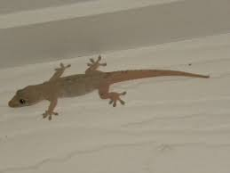

Adeeb Khan
Studying computer science,coder,know several programming languages and self-made web-developer.
Please don't waste your time on this site as I have made it just to practice my programming skills. It is a sort of experimentation.If you are bored then you must go to the youtube or you may on your TV and
just Netflix and
Chill.;
hoping that you have a partner....LOL!
Work Experience
| Time |
Work |
| 2017-2018 |
Wasting time |
| 2018-2019 |
Wasting time |
| 2019-present |
What do you expect.....Yup, Wasting time |
Skills
| Irritating others |
⭐⭐⭐⭐⭐ |
| Playing pranks |
⭐⭐⭐⭐ |
| Coding |
⭐⭐ |
| Doing something meaningful |
⭐ |
How can you procrastinate:
- You can stare at my website and can find something meaningful.

- You can look how the lizards are moving across your sealing.Now, you may wonder about Spiderman.
- You may go outside your home just to see what people are doing.
- You can take a siesta.
- You can look at the sky just to watch how the birds are flying. You can imitate their movement of flying and believe me,one day you will be able to fly as there is a saying or something like that,"If you think you can, then you
can".
- You may log into your facebook profile and can do a lot of things like:
- You may react haha on your friend's profile pics, especially on one in which they are making a pout.
- You may tag your friends in irrelevant memes.
- You may like your own pic and can do some poetic boasting of yourself in comment box.
- You can take a screenshot of your friend's picture with his or her crush and can send it to their parents.(Compulsory)
Since, you have spent a great deal of time with me, this means that you are a really free person. Now, I am obliged
to give you some more tips about how to waste your time.......:
Now,if you have other ideas about how to waste time or even we can simultaeneously waste our time by debating over which is best method of wasting time;
you can contact me.